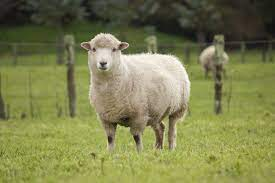

Cattle are commonly raised as livestock for meat (beef or veal, see beef cattle), for milk (see dairy cattle), and for hides, which are used to make leather. They are used as riding animals and draft animals (oxen or bullocks, which pull carts, plows and other implements). Another product of cattle is their dung, which can be used to create manure or fuel. In some regions, such as parts of India, cattle have significant religious meaning. Cattle, mostly small breeds such as the Miniature Zebu, are also kept as pets.
Dogs (Canis lupus familiaris) are domesticated mammals, not natural wild animals. They were originally bred from wolves. They have been bred by humans for a long time, and were the first animals ever to be domesticated. There are different studies that suggest that this happened between 15.000 and 100.000 years before our time. The dingo is also a dog, but many dingos have become wild animals again and live independently of humans in the range where they occur (parts of Australia).

Sheep (Ovis aries) are quadrupedal, ruminant mammals typically kept as livestock. Like all ruminants, sheep are members of the order Artiodactyla, the even-toed ungulates. Although the name sheep applies to many species in the genus Ovis, in everyday usage it almost always refers to Ovis aries. Numbering a little over one billion, domestic sheep are also the most numerous species of sheep. An adult female is referred to as a ewe (/juː/), an intact male as a ram, occasionally a tup, a castrated male as a wether, and a young sheep as a lamb.
Rabbits are small mammals in the family Leporidae (along with the hare) of the order Lagomorpha (along with the pika). Oryctolagus cuniculus includes the European rabbit species and its descendants, the world's 305 breeds[1] of domestic rabbit. Sylvilagus includes 13 wild rabbit species, among them the seven types of cottontail. The European rabbit, which has been introduced on every continent except Antarctica, is familiar throughout the world as a wild prey animal and as a domesticated form of livestock and pet. With its widespread effect on ecologies and cultures, the rabbit (or bunny) is, in many areas of the world, a part of daily life—as food, clothing, a companion, and a source of artistic inspiration.